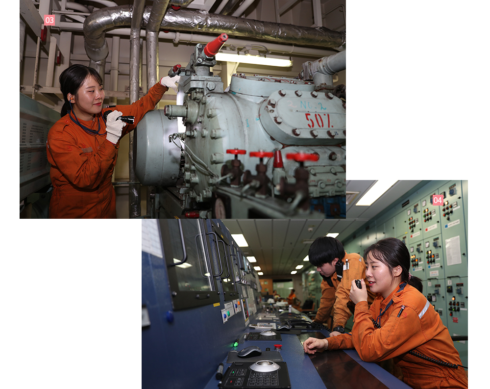

와 제 롤모델이 잡스에요!!! 아이폰 첫 출시되고 나서부터 계속 아이폰 쓰고 있는데 잡스가 너무 그리워요ㅠㅠ 지금은 돈만 벌려고 하는 것 같아서 디자인 발전도 없고ㅠㅠ와 제 롤모델이 잡스에요!!! 아이폰 첫 출시되고 나서부터 계속 아이폰 쓰고 있는데 잡스가 너무 그리워요ㅠㅠ 지금은 돈만 벌려고 하는 것 같아서 디자인 발전도 없고ㅠㅠ와 제 롤모델이 잡스에요!!! 아이폰 첫 출시되고 나서부터 계속 아이폰 쓰고 있는데 잡스가 너무 그리워요ㅠㅠ 지금은 돈만 벌려고 하는 것 같아서 디자인 발전도 없고ㅠㅠ와 제 롤모델이 잡스에요!!! 아이폰 첫 출시되고 나서부터 계속 아이폰 쓰고 있는데 잡스가 너무 그리워요ㅠㅠ 지금은 돈만 벌려고 하는 것 같아서 디자인 발전도 없고ㅠㅠ와 제 롤모델이 잡스에요!!! 아이폰 첫 출시되고 나서부터 계속 아이폰 쓰고 있는데 잡스가 너무 그리워요ㅠㅠ 지금은 돈만 벌려고 하는 것 같아서 디자인 발전도 없고ㅠㅠ
스페셜 인터뷰
첫 항해의 소감이요?
두근두근
설렘의
연속이죠!
‘현대 커리지호’
정수홍 3등 기관사 인터뷰
첫 항해의 소감이요?
두근두근
설렘의 연속이죠!
‘현대 커리지호’
정수홍 3등 기관사 인터뷰
눈 앞으로 거대한 엔진의 모습이 펼쳐졌다.
엄청난 기계 굉음이 고막을 울리고, 뜨거운 열기로 가득한 이곳은 바로 현대 커리지호의 기관실.
<바다소리>가 찾은 현대 커리지호 기관실에서 정수홍 3등 기관사가 구슬땀이 흐르는 얼굴과
기름때가 잔뜩 묻는 작업복 차림으로 엔진을 살피고 있었다.
글·사진
편집실
01 정수홍 3기사가 입사 후 처음으로 승선한 현대 커리지호
02 현대 커리지호 갑판 위에서 포즈를 취하고 있는 정수홍 3기사
지난 5월 출항했던 현대 커리지호가 3개월만에 부산신항으로 돌아왔다. 가파른 철제 계단을 올라 들어선 갑판에서 다시 맨 하층 기관실을 향해 발걸음을 옮기자 인터뷰의 주인공이 모습을 드러냈다. 2018년도 초임사관 중 유일한 여성해기사이자, 현대 커리지호 기관실에서 정식 항해를 처음으로 시작한 정수홍 3기사가 바로 그 주인공이다.
반짝이는 눈, 밝고 활달한 표정, 경쾌한 목소리가 인상적인 정수홍 3기사는 기름때가 잔뜩 묻은 작업복 차림을 하고 있었다. 촬영을 위해 새 옷으로 갈아입고 오기를 권유하자, “이 모습이 평소의 제 모습이고, 열심히 일한 증거이기 때문에 그대로 촬영하고 싶어요”라고 말하며 미소 짓는 정수홍 3기사. 현대 커리지호와 함께하는 하루하루가 설레고 보람차다는 그녀에게 첫 항해의 소감과 앞으로의 포부에 대해 물었다.
엔진은 선박의 심장이자 생명
“대학 졸업 이후 현대상선에서 실습을 받았고, 첫 정식 항해 또한 현대 커리지호에서 시작했어요. 제가 현대상선을 택한 이유는 국내 최고의 해운선사라는 것을 알고 있었기 때문인데요. 그런 현대상선에서 해기사의 길을 걸을 수 있어서 정말 큰 행운이라고 생각합니다.”
정수홍 3기사가 근무하는 현대 커리지호는 CIX 노선을 운항하는 8,600TEU급 컨테이선이다. 길이 339.6m, 너비 45.6m, 높이 24.6m로 컨테이너를 쌓으면 건물 12층 높이에 이른다.
이러한 현대 커리지호의 또 다른 특징 중 하나는 현대상선의 선박 가운데 가장 힘이 센 메인엔진을 갖고 있다는 것이다. 총 14기통의 엔진과 3개층 규모의 기관실은 현대 커리지호의 심장이자 생명과도 같다.
육중한 문을 열어 엔진룸을 소개하는 정수홍 3기사를 따라 안으로 들어서자 뜨거운 열기가 온몸을 감쌌다. 또 ‘퉁탕탕, 퉁탕탕’ 거대한 엔진 소리가 둔중하고 무거운 저음으로 들려왔다. 중앙에 14기통 메인엔진이 자리 잡고 주변부로 발전기, 보일러, 청정기 등의 여러 설비들이 쉴새 없이 작동되고 있었다. 일반적인 기계에서 느낄 수 없는 생명력 넘치는 모습이 그 현장에 있었다.
엔진룸과 문 하나를 두고 연결된 기관통제실은 정수홍 3기사가 근무 시간의 대부분을 보내는 곳이다. 기관부는 매일 8시 출근 5시 퇴근의 정규 근무와 4시간 간격으로 엔진룸을 순찰하는 당직 근무로 24시간 엔진을 관리하고 있다. 자동화 시스템을 통해 수많은 설비를 효율적으로 통제하는 것은 물론, 수천 개의 부품을 정기적으로 교체하고 수리하여 엔진이 최상의 상태로 움직이도록 하는 것이 주요 임무 중 하나다. 정수홍 3기사 또한 이 업무의 한 축을 담당하며 활약을 이어가고 있다.
“현대 커리지호는 상선 중에서도 엔진과 기관부의 규모가 큰 편인데요. 물론, 규모가 큰 만큼 업무도 많아서 힘들 때도 있지만, 기관사로서는 큰 자부심을 느끼며 보람찰 때가 많습니다.”

03 정수홍 3기사가 엔진룸 내 기기를 꼼꼼히 둘러보고 있다
04 기관통제실은 정수홍 3기사가 근무시간의 대부분을 보내는 곳이다
도전하면 이루어질 여성해기사의 길
“어렸을 때부터 적극적이고 활동적인 성격이었어요. 아버지께서 해운 관련 업계에 종사하셨는데, 아무래도 그런 아버지의 모습을 보며 자연스럽게 바다와 선박에 동경을 가지게 됐죠.”
여성으로서는 쉽지 않다고 알려진 해기사의 길. 하지만 현재 정수홍 3기사는 그 길을 자신감 넘치는 모습으로 개척해 나가고 있다. 무거운 토크렌치를 손쉽게 사용하고, 육중한 철문을 힘차게 열고,
복잡한 설비와 기계들을 자유롭게 활용하는 모습은 보는 이의 감탄을 자아낸다.
“엔진을 관리하는 기관부의 업무는 오랫동안 여성이 도전하기 어려운 분야로 여겨졌었는데요. 이제는 모두 옛날 이야기인 것 같습니다. 도전정신과 프로의식이 있다면, 꾸준한 트레이닝으로 업무 능력을 쌓는다면 성별에 상관 없이 누구나 기관부에서 일할 수 있다고 생각해요. 특히 저는 현대상선에서 뛰어난 실력을 가진 선배님들과 우수한 인프라를 통해 경험을 쌓은 것이 큰 도움이 되었습니다.”
동료 현상인들은 그런 그녀의 모습을 지켜보며 칭찬과 격려의 말을 아끼지 않았다. “프로의식이 돋보이고, 흡수력이 매우 좋은, 정말 유능한 선원입니다. 미래가 기대되는 기관사입니다. (최종민 선장)”, “무엇이든 적극적으로 해내는 모습이 보기 좋습니다. 무거운 토크렌치도 손쉽게 다루는 모습을 보고 ‘바로 이 친구다’ 싶었습니다. (최형도 1기사)”, “밝고 쾌활한 모습으로 모두에게 긍정적인 에너지를 전해주는 분위기 메이커에요. (김휘환 2기사)”
05 현대 커리지호의 엔진룸을 책임지고 있는 기관부 (사진 왼쪽부터 최형도 1기사, 정수홍 3기사, 김휘환 2기사)
어느덧 현대 커리지호에서 항해 네 달째를 맞이한 정수홍 3기사. 앞으로 두 달의 항해를 마치면 첫 휴가를 맞게 된다. 해기사의 길을 걷는 이라면 평생 잊을 수 없다는 첫 휴가의 기억. 그녀는 다가올 첫 휴가를 어떻게 보낼 예정일까. 정수홍 3기사는 다가올 첫 휴가를 부모님과 함께 보내고 싶다고 말했다. 맛있는 음식을 사드리고 휴가도 함께 보내며 효도하고 싶다고. 그리고 휴가 동안 수영을 마음껏 하고 싶다고 밝혔다.
정수홍 3기사의 앞으로의 포부는 무엇일까. “모든 사람에게는 배울 점이 있고 모든 이가 제 롤모델이 될 수 있다고 생각해요. 많은 선배님들에게 배우고 익히며 업무 능력을 증진해서 훗날 동료직원들에게 멋진 본보기가 되는 선배 그리고 후배로 거듭나고 싶습니다”라는 포부를 전하며 밝게 미소지었다.
#Tag
- #PI추진팀 #박상훈 #디지털트랜스포메이션
-
최고예요
322
-
좋아요
322
-
슬퍼요
322
-
그저 그래요
322
-
화나요
322